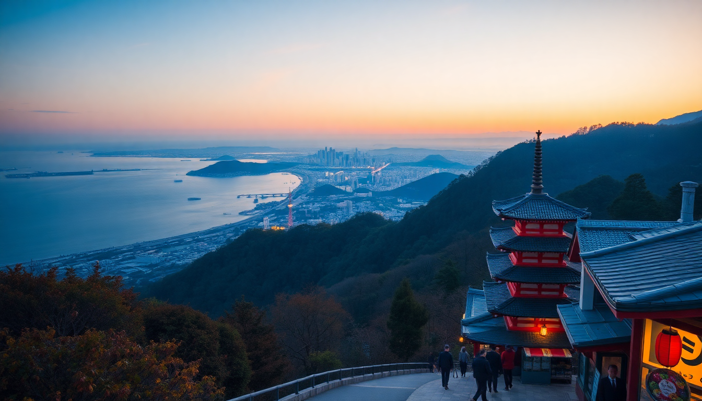

How to Get Around Japan: Trains, Buses & Flights

I planned my own two-week Japan trip last fall, and the biggest headache wasn’t the language barrier or the jet lag—it was figuring out transport. Between the shinkansen, limousine buses, and discount airlines, the options can feel overwhelming. Here’s what I actually did, what I’d do differently, and which passes are worth your yen.
Should I buy a JR Pass for my trip?
The JR Pass is a flat-fee unlimited travel pass on most JR trains (including most shinkansen) for 7, 14, or 21 consecutive days. I bought the 7-day pass for ¥50,000 (around $330) and activated it the day I left Tokyo for Kyoto.
I ran the math before buying. A one-way shinkansen from Tokyo to Kyoto costs about ¥14,000. Add Kyoto to Osaka (¥1,500), Osaka to Hiroshima (¥10,000), and Hiroshima back to Tokyo (¥19,000), and my total came to roughly ¥44,500. The pass saved me about ¥5,500—not a huge margin, but I also used it for local JR lines in Tokyo (Yamanote Line) and Osaka (Osaka Loop Line), which added value.
- 7-day JR Pass (¥50,000): Best for a Tokyo–Kyoto–Osaka–Hiroshima loop in one week.
- 14-day JR Pass (¥80,000): Only worth it if you’re adding a distant leg like Hakodate or Fukuoka.
- Non-JR alternatives: For shorter trips (Tokyo–Kyoto only), skip the pass and buy individual shinkansen tickets or use a budget airline like Peach or Jetstar.
My take: The JR Pass is good if you’re doing at least one long round trip (Tokyo–Hiroshima or Tokyo–Hakodate) within the validity period. For a single Tokyo–Kyoto–Osaka run, it’s cheaper to pay as you go. I also found the pass handy for hopping on the Narita Express from Narita Airport to Tokyo Station—that ride alone costs ¥3,000.
How do I use the shinkansen (bullet train) without stress?
The shinkansen network is the spine of intercity travel in Japan. I took the Nozomi, Hikari, and Kodama services. Nozomi is the fastest (Tokyo to Osaka in 2h20m) but is not covered by the basic JR Pass—you’d need the more expensive Green Pass or pay a supplement. Hikari is slightly slower (2h40m) and fully covered.
I reserved seats online via the JR West website for the Kyoto–Hiroshima leg. You can also reserve at any JR ticket office (midori no madoguchi) or at the automated machines. I found the machines easy to use with the English language option.
- Nozomi: Fastest, but not JR Pass-friendly. Pay extra or buy a separate ticket.
- Hikari: JR Pass–eligible, stops at Kyoto, Shin-Osaka, and Hiroshima.
- Kodama: Stops at every station—slow, but useful for reaching smaller cities like Nagoya or Okayama.
Practical tips: Store large luggage behind the last row of seats (reserve a “luggage seat” if your bag exceeds 160cm total dimensions). I didn’t bother reserving a seat on the Tokyo–Kyoto Hikari on a Tuesday morning and found plenty of empty seats. For Hiroshima–Tokyo on a Sunday afternoon, I reserved two days ahead.
When should I fly instead of taking the train?
I flew from Tokyo (Narita) to Osaka (Kansai) once on Peach Aviation to save time and money. The flight took 1h15m, and the ticket cost ¥8,000 including a checked bag—compared to ¥14,000 for a shinkansen. But you have to factor in airport transfer time: from Shinjuku to Narita is about 90 minutes by limousine bus, and Kansai Airport to Namba is another 50 minutes. Door-to-door, the shinkansen from Tokyo Station to Shin-Osaka took me 2h20m total. The flight took about 3.5 hours.
I’d only recommend flying for longer routes like Tokyo to Fukuoka or Sapporo. For the Tokyo–Kyoto–Osaka–Hiroshima corridor, the shinkansen is faster and less hassle.
- Peach Aviation: Budget carrier, flies Narita–Kansai and Narita–Itami (Osaka). No frills, but reliable.
- Jetstar Japan: Similar routes, slightly higher baggage fees.
- Skymark: Flies from Haneda (closer to central Tokyo) to Kobe and Sapporo.
Watch out: Budget airlines in Japan have strict baggage limits. My Peach flight allowed only 7kg carry-on. I paid ¥3,000 for a 20kg checked bag at the counter—cheaper than booking online if you forget. Also, Kansai Airport is in the middle of nowhere; the Nankai Line train to Namba costs ¥1,500 and takes 45 minutes.
Are highway buses a good option for budget travel?
Yes, especially between Tokyo and Kyoto or Osaka. I took a Willer Express overnight bus from Tokyo (Shinjuku) to Kyoto (Kyoto Station) for ¥4,500—about one-third the shinkansen price. The bus had reclining seats, a blanket, a curtain, and a toilet. I slept okay, but I’m a sound sleeper. If you’re tall or get motion sickness, skip this.
Daytime buses are also an option. I took a Keisei Bus from Tokyo Station to Osaka (Umeda) for ¥5,000. It took 8 hours with one rest stop. The view of Mount Fuji from the highway was a nice bonus.
- Willer Express: Largest network, English booking site, multiple seat classes (4-row standard, 3-row premium).
- Keisei Bus: Cheaper, fewer amenities, but reliable.
- Night bus vs. day bus: Night bus saves a night of accommodation (¥4,000–¥8,000). Day bus is better for sightseeing en route.
My advice: Book highway buses at least a week in advance, especially for overnight services. I booked mine through the Willer website two days before and got the last seat. Also, bus terminals in Tokyo are usually at Shinjuku or Tokyo Station—both are easy to find with Google Maps.
How do I get around Tokyo, Kyoto, and Osaka without a car?
Public transit in these cities is excellent. I never needed a car. In Tokyo, I used the JR Yamanote Line (loop line) for most sightseeing—it connects Shinjuku, Shibuya, Ueno, and Tokyo Station. For subways, I bought a Suica card at a JR ticket machine (¥500 deposit, refundable). You can also use an IC card (Pasmo, Icoca) across all three cities.
In Kyoto, buses are more practical than trains for reaching temples like Kinkaku-ji and Fushimi Inari. I bought a Kyoto City Bus One-Day Pass for ¥700 at Kyoto Station. It paid for itself after three rides.
In Osaka, the Osaka Metro is king. The Midosuji Line runs from Umeda to Namba and Shin-Osaka. I also used the Osaka Loop Line for a quick loop around the city.
- Suica/Pasmo/Icoca: Rechargeable IC cards, works on JR, subway, and buses in all three cities. Also works at convenience stores.
- Kyoto City Bus Pass: ¥700/day, unlimited rides. Buy at Kyoto Station bus information center.
- Osaka Amazing Pass: ¥2,800 for 1 day, includes unlimited subway and free entry to 40 attractions (Osaka Castle, Umeda Sky Building). I used it for Osaka Castle and the Hep Five Ferris Wheel—worth it.
One tip: In Kyoto, buses get crowded at peak hours (9–11am, 4–6pm). I walked from Gion to Kiyomizu-dera (20 minutes) instead of waiting 15 minutes for a bus. Google Maps is reliable for real-time bus schedules.
What’s the best way to get from Hiroshima to Miyajima Island?
The JR Pass covers the JR Miyajima Ferry from Hiroshima Station to Miyajima Island. I took the JR Sanyo Line from Hiroshima Station to Miyajimaguchi Station (25 minutes), then walked to the ferry terminal (5 minutes). The ferry ride is 10 minutes and runs every 15 minutes.
If you don’t have a JR Pass, the round-trip ferry costs ¥1,800. I’d still recommend the JR ferry because it’s free with the pass and drops you at the same pier as the cheaper Matsudai ferry.
- JR Miyajima Ferry: Free with JR Pass, runs from Miyajimaguchi to Miyajima Pier.
- Matsudai Ferry: Slightly cheaper (¥1,500 round trip) but not covered by JR Pass.
- Tip: Arrive before 9am to see the Itsukushima Shrine floating torii gate at low tide. I went at 8:30am and had the place almost to myself.
FAQ
Is the JR Pass worth it for a 10-day trip? It depends on your route. For a 10-day trip covering Tokyo–Kyoto–Osaka–Hiroshima, a 7-day JR Pass (¥50,000) activated on day 4 (when you leave Tokyo) can save you money. But if you’re only doing Tokyo–Kyoto–Osaka and back, individual shinkansen tickets (about ¥30,000 total) are cheaper. I’d calculate your exact route on Hyperdia or Japan Travel by Navitime before buying.
Can I use my Suica card on the shinkansen? No. Suica cards work only on local JR lines, subways, and buses. For shinkansen, you need a separate ticket or a JR Pass. You can link a Suica to a shinkansen ticket on the JR East app, but I found it easier to just buy a ticket at the machine.
Do I need to reserve seats on the shinkansen? Not always. On off-peak hours (weekday mornings, early afternoons), the unreserved cars (cars 1–3 on Hikari) often have seats. I traveled Tokyo–Kyoto on a Tuesday at 10am and didn’t reserve—plenty of space. On a Sunday afternoon from Hiroshima to Tokyo, I reserved two days ahead and was glad I did. If you’re traveling during Golden Week (late April–early May) or Obon (mid-August), reserve as early as possible.
Conclusion
- Buy a 7-day JR Pass if you’re doing a Tokyo–Kyoto–Osaka–Hiroshima loop within one week; skip it for shorter trips.
- Fly budget (Peach, Jetstar) only for long distances like Tokyo to Fukuoka or Sapporo—shinkansen is faster for the main corridor.
- Use highway buses (Willer Express) to save money and a night’s accommodation on overnight routes.
- Get a Suica card for local transit in Tokyo, Kyoto, and Osaka—it works everywhere and saves time.
- Reserve shinkansen seats during weekends and holidays; walk into unreserved cars on weekdays.